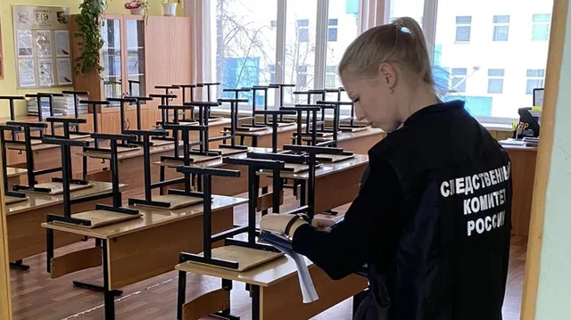

Украинские войска обстреляли территорию ДНР 36 раз за сутки
ДОНЕЦК, 11 фев - РИА Новости. Украинские войска за минувшие сутки 36 раз обстреляли территорию ДНР, выпустив в общей сложности 246 снарядов различного калибра, сообщило представительство республики в Совместном центре по контролю и координации вопросов, связанных с военными преступлениями Украины (СЦКК).
"За истекшие сутки Представительство сообщало о 36 фактах ведения огня со стороны вооруженных формирований Украины. На донецком направлении противник совершил 16 обстрелов из артиллерии 155 миллиметров. На светлодарском направлении - один обстрел из артиллерии 155 миллиметров. На горловском - 18 обстрелов из артиллерии 155 и 152 миллиметра, минометов 120 и 82 миллиметра. На ясиноватском - один обстрел из артиллерии 155 миллиметров. Выпустив 246 единиц различных боеприпасов", - говорится в сообщении представительства в телеграм-канале.
Под вражеским огнем оказались районы десяти населенных пунктов Республики: Донецк (Киевский, Куйбышевский, Кировский, Петровский районы), Луганское, Майорск, Озеряновка, Горловка (Никитовский район), Михайловка, Новобахмутовка, Ясиноватая, Макеевка (Червоногвардейский район), Александровка.
При пожаре в частном доме в Татарстане погибли три человека
КАЗАНЬ, 11 фев – РИА Новости. Пожар произошел в частном доме в одном из районов Татарстана в субботу утром, погибли мужчина и двое детей, сообщает главное управление МЧС России по Татарстану.
"Пестречинский район, село Новое Шигалеево. В 7.15 мск поступило сообщение о пожаре в частном доме. Пожарные подразделения прибыли на место происшествия в 7.29. Дом горел по всей площади. По предварительным данным, в доме проживали двое взрослых и четверо детей", - говорится в сообщении.
В 8.21 пожар был потушен. Женщину и двухлетнего ребенка госпитализировали. По информации МЧС, пострадавшие получили отравление продуктами горения, возможны переломы.
Во время осмотра обнаружены тела мужчины и двух детей. "Судьба еще одного ребенка уточняется", - отмечает ведомство.
В Ростовской области спасли провалившихся под лед школьников
РОСТОВ-НА-ДОНУ, 10 фев — РИА Новости. Житель Новочеркасска в Ростовской области спас двух школьников, провалившихся под лед на реке, сообщила пресс-служба ГУ МЧС по региону.
Инцидент произошел на реке Грушевке в хуторе Яново-Грушевском Октябрьского района. Информацию о нем спасатели получили в 17:18 мск.
"Школьники гуляли по льду и вышли к мосту, где лед оказался тонким. Восьмилетний Дима первым оказался в воде, его товарищ, десятилетний Артем, попытался его спасти и тоже ушел под лед", — рассказали в пресс-службе.
Попавших в беду детей заметили очевидцы, один из которых вытащил мальчиков из ледяной воды. Уточняется, что сотрудники МЧС быстро прибыли на помощь, так как примерно в ста метрах от места происшествия находится пожарно-спасательная часть. Специалисты приняли детей из рук мужчины, который вытащил их из воды, и отвезли в подразделение. Там их обогрели, укутали в теплые одеяла, напоили горячим чаем и вызвали скорую помощь.
Мальчиков госпитализировали в детскую больницу Новочеркасска с переохлаждением. Сейчас их жизни ничего не угрожает.

В Химках классный руководитель решила уволиться после поножовщины в классе
МОСКВА, 10 фев - РИА Новости. Классный руководитель пятиклассниц лицея №10 в подмосковных Химках, между которыми во вторник произошел конфликт, закончившийся поножовщиной, написала заявление об увольнении по собственному желанию, приказа об увольнении еще нет, сообщили РИА Новости в администрации городского округа Химки.
Во вторник днем в пресс-службе областного главка МВД сообщили, что словесный конфликт между двумя пятиклассницами в химкинской школе закончился поножовщиной: одна из девочек нанесла другой ножевые ранения, пострадавшую госпитализировали. Позднее министерство здравоохранения Московской области сообщало, что пострадавшая пятиклассница переведена из реанимации в отделение хирургии, у девочки положительная динамика.
"Педагог отстранена от работы по личной просьбе в связи с морально-психологическим состоянием. Заявление на увольнение написано по собственному желанию и передано директору", - говорится в сообщении.
Приказа об увольнении еще нет, заявление не было запущено в делопроизводство, добавили в ведомстве.